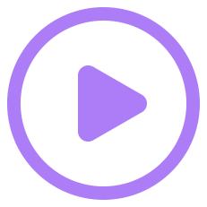

화면 틀
실제 화면(1920×960)을 절반 크기로 보여줌. 공용 css/common.css를 고치면 실제 페이지에도 그대로 반영됨. 페이지 전용 스타일 표시가 있는 항목은 그 페이지 <style>의 복사본이라 여기서 고친 뒤 원래 페이지에도 옮겨야 함.
1. 영상 화면 .video-box + .next-btn-center — 공용화 완료
마크업: <div class="video-box"><video class="video-el" src="video/video.mp4" controls></video><img class="video-play-btn" …></div> +
<a class="js-nav-effect next-btn-center">. 위치·크기·테두리는 전부 공용이라 페이지에는 배경(main)만 둠.


2. QUIZ 화면 .quiz-stage + .quiz-ask-box + .card-btn.is-quiz — 공용화 완료
배경 <main class="quiz-stage">, 질문은 .quiz-ask-box(아바타 img/common/avatar_quiz.png),
선택지는 <button class="answer-pick card-btn is-quiz"> — 6글자 넘는 선택지는 .is-long(50px, <br>로 두 줄).
페이지에는 선택지 좌표만 둠(버튼 그림자 폭만큼 margin-left:10px).
적용: sa/01:16 · sa/02:12 · gwa/03:11 · gwa/01:26(2지선다·OX·3지선다를 한 페이지에서 문항 데이터로 그림) (sa/04:20은 원래 CSS, 선택지를 가로로 흘려 배치). sa/07:15(O/X 아이콘형)는 아직 따로. 유형별 비교는 아래 2-1 참고.
어른이 되어 하고 싶은 일을 결정할 때, 중요하게 생각해야 할 것은 무엇일까요? 모두 골라보세요.
2-1. 퀴즈 풀기 유형 비교 — 문항 형태별(공용 틀 그대로)
모든 퀴즈는 같은 틀: main.quiz-stage + .quiz-ask-box(아바타 · Q번호 · 질문) + 선택지. 유형은 선택지 모양과 개수로 나뉨. 한 페이지 안에서 문항을 .step-flow로 넘기는 방식(sa/01:16 · gwa/03:11)과, 스크립트로 문항 데이터를 바꿔 그리는 방식(gwa/01:26)이 있음.
공통 규칙: 정답이면 정답음 후 다음 문항 / 오답이면 오답음 + 힌트 팝업(공용 알약형 .avatar-popup-panel)이 2초 뒤 자동으로 닫힘(버튼 없음). 선택지는 모두 같은 높이의 공용 .card-btn.is-quiz(464×155), 6글자를 넘으면 .is-long + <br>.
인터넷에서 날씨 정보를 모으는 행동을 뭐라고 할까요?
내일의 부산 날씨에 대해 물어볼 때, 어떻게 질문해야 똑똑하게 답할까요?
어른이 되어 하고 싶은 일을 결정할 때, 중요하게 생각해야 할 것은 무엇일까요? 모두 골라보세요.
단어를 표에 깔끔하게 정리하면 AI가 잘 이해할까요?
단어를 표에 깔끔하게 정리하면 AI가 잘 이해할까요?
정답이에요!
단어를 표에 깔끔하게 정리하면 AI가 잘 이해할까요?
데이터의 정리가 잘 되어 있으면 AI도 쉽게 읽을 수 있어요!
| 유형 | 선택지 | 사용 화면 | 판정 |
|---|---|---|---|
| 2지선다 | 카드 버튼 2개(가로) | gwa/01:26 · gwa/02:11 · gwa/03:11 | 1개 정답, 오답이면 힌트 팝업 |
| 3지선다 | 카드 버튼 3개(가로) | gwa/01:26 · sa/02:12 · sa/05:11 | 1개 정답 |
| 다중 선택 | 카드 버튼 5개(2줄) | sa/01:16 · sa/02:12 | 정답 여러 개, 다 고르면 자동 진행 |
| OX | O·X 아이콘 360px(사회 1차시는 435px) | gwa/01:26 · gwa/03:11 · sa/01:16 · sa/06:10 · sa/07:10 | O 또는 X |
| 정답 팝업 | 알약형 아바타 팝업 + 체크 아이콘(avatar_correct_gwa.png) | 전체(OX는 눌린 이미지 icon_o_on.png · icon_x_on.png로 바뀜) | 2초 뒤 다음 문항 |
| 오답 힌트 | 알약형 아바타 팝업 | 전체 | 2초 뒤 자동 닫힘(버튼 없음) |
3. 활동 도입(게임 방법) 화면 .intro-* — 공용화 완료
활동 시작 전 "게임 방법" 화면. 디자인 기준은 sa/01 직업 퀴즈 게임 도입 화면(통이미지)이고, 같은 모양을 글자로 만든 공용 틀.
마크업: <div class="intro-character"><img src="img/p_character_main.png"></div> +
<div class="intro-panel">(.intro-tab "게임 방법" 리본은 선택 · .intro-lead 안내 문장은 선택 · .intro-list 번호 목록) +
시작 버튼 <a class="js-nav-effect next-btn-intro">. 페이지에는 CSS가 필요 없음(main에 bg-default만).
안내 문장을 크게(60px) 쓰고 목록까지 패널에 들어가도록 글자·간격을 줄이려면 문장에 .intro-lead.is-large를 붙임(패널의 :has(.intro-lead.is-large)가 목록·간격을 함께 조정). .intro-lead만 쓰면 56px 그대로. 목록 문장이 길어 넘치면 .intro-panel.is-long(sa/02:13). 리본 없이 안내 문장을 제목처럼 위에 크게 두려면 .intro-panel.is-title(sa/03:04·06·08 · sa/05:04·06·09 · sa/06:04·06·08·11).

게임 방법
우리 동네 지도를 살펴보고,
학생에게 필요한 장소를 찾아줘요.
- 1. 말풍선을 읽고 무엇이 필요한지 생각해요.
- 2. 주인공을 알맞은 장소로 드래그해서 옮기면 미션 성공!
아직 통이미지인 도입 화면: sa/01:04(보물상자 구성이라 제외). 과학 도입·마무리 화면은 모두 글자로 교체했고, 사회 1차시·과학 1·3차시 비교는 도입·마무리 화면 페이지에 있음.
4. 보드 패널 — 공용화 후보 페이지 전용 스타일
활동 내용을 담는 큰 흰 판. 모양은 거의 같고(background:#fefbf9 · border:solid 6px #48159c · 그림자 -7px 10px 6px 2px rgba(92,61,240,.17))
모서리만 36 · 40 · 48 · 60px로 제각각. 기준을 하나(또는 둘)로 정하면 .board-panel 같은 공용 클래스로 합칠 수 있음. 위치·크기는 페이지마다 다름.
안쪽에 한 번 더 칸을 나눌 때는 #eef3fb 배경 + 5px 남색 테두리(sa/06:05 보물 상자 · sa/06:12 선반).
5. 마무리(미션 성공) 화면 .end-title + .end-panel + .end-btn-* — 공용
마크업: <p class="end-title">미션 성공!</p> + <div class="end-panel"><p class="end-desc">설명</p></div>(강조 문구는 .end-lead, 보조 문구는 .p-how-lead.is-center.is-large) +
<a class="js-nav-effect end-btn-retry"> · <a class="js-nav-effect end-btn-next-lesson">. 왼쪽 캐릭터는 페이지 CSS(.char-box)로 위치만 지정. 배경은 main.bg-default.
미션 성공!
친구의 마음을 잘 채워주었어요!


6. 활동 방법 안내 .intro-panel.p-how-panel — 공용
도입 화면의 변형. 리드 문구(.p-how-lead) + 파란 테두리 안내 박스(.p-how, 제목은 <b>, 목록은 .intro-list, 팁은 .p-how-tip).
팁에 <b>TIP</b>을 넣으면 알약 모양. 리드 문구는 기본 왼쪽 정렬이고 .is-center(가운데) · .is-large(50px)로 분기. 시작 버튼은 글자 버튼 <span class="card-btn is-start">을 .next-btn-intro 안에 넣음.
캐릭터가 오른쪽 위에 오는 변형: .intro-panel.is-wide + .intro-character.is-right + 시작 버튼 .next-btn-intro.is-box(gwa/01:05·08, gwa/03:06·08). 글자 크기가 다르면 같은 선택자로 그 값만 페이지 CSS에서 덮어씀.
7. 폰 틀 .phone-frame — 공용
어두운 테두리 + 회색 윤곽의 휴대폰 화면 틀. left/top/width/height는 페이지 CSS에서 지정하고, 틀 두께가 다르면 padding·border-radius만 덮어씀.
사용: sa/07:07·09 · sa/08:08·10·13 · gwa/05:08 · gwa/07:09·10. (Canva 앱 화면 .cv-*은 별도 공용 틀)
8. 배경 main.bg-* — 공용
<main class="...">에 붙이는 배경. 위치·크기(1920×960)는 공용 main이 처리하므로 페이지에는 배경만 지정.